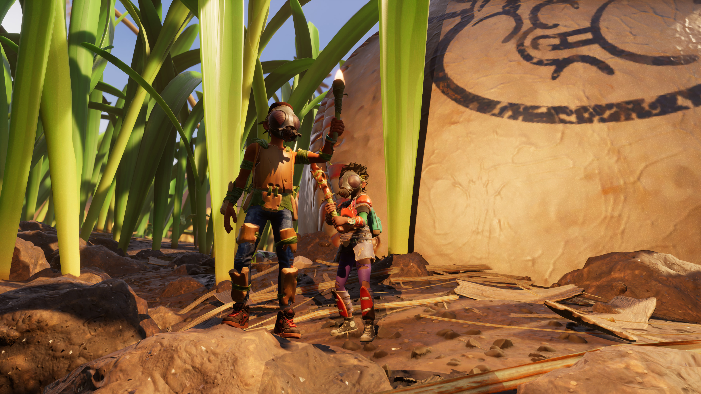
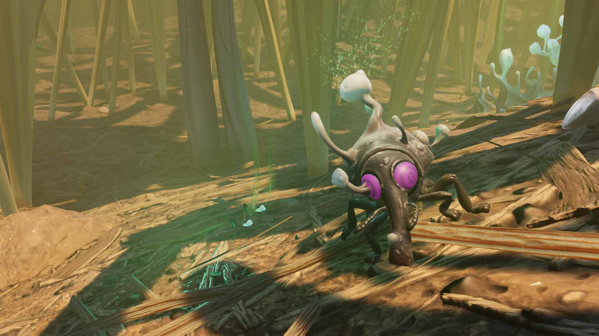
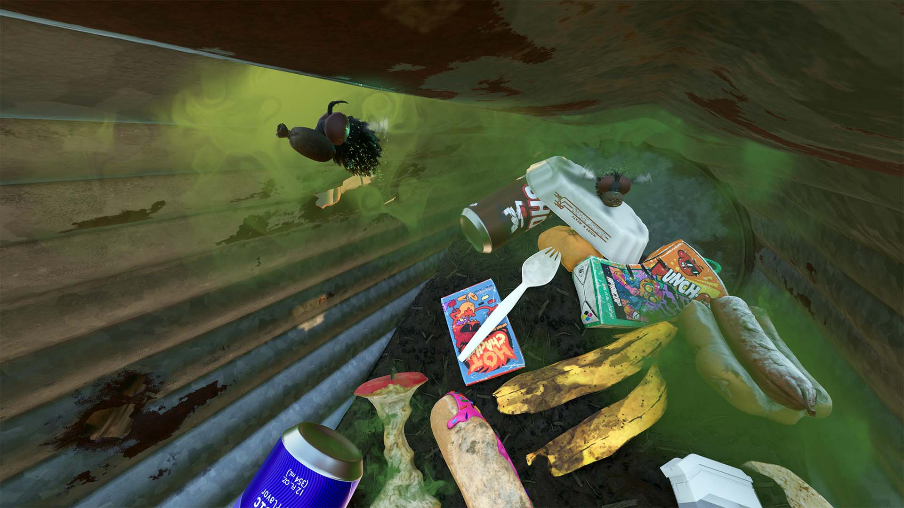

INNOVATIONS

ARMOR & WEAPONS
Not one, not two, but three new sets have made their way into Grounded! Plus, we have made some changes to the way armor works by adding new classifications and adjusting set bonuses to make sure you can prepare for surviving the backyard in the best way possible. Oh yeah, and don't forget the new weapons and shiny new shovel either. So hop in the game, craft your new gear, and celebrate with some glorious Hot Chachas!

MEET THE NEW NEIGHBORS
The infected mites and weevils have some new friends moving into the Haze area with them who are just exploding with excitement to meet you. On top of that, the Trash Heap, the Sandbox, and the Black Anthill have new tenants who are all moved in and ready for the backyard block party. These new friends are here to stay, and no, they aren't spiders, but we know you'll be pleasantly surprised when you meet them!

NEW FEATURES
This update brings with it a handful of new features that will help you customize your playstyle. From the Yoked Girth Milk Molar system that allows for individual and partywide bonuses, a Smithing Station that will let you upgrade and augment your weapons and tools, and the newly added Brain Power system to help you with Raw Science management. Are you ready to take more control over your destiny as you continue to survive and explore the backyard?